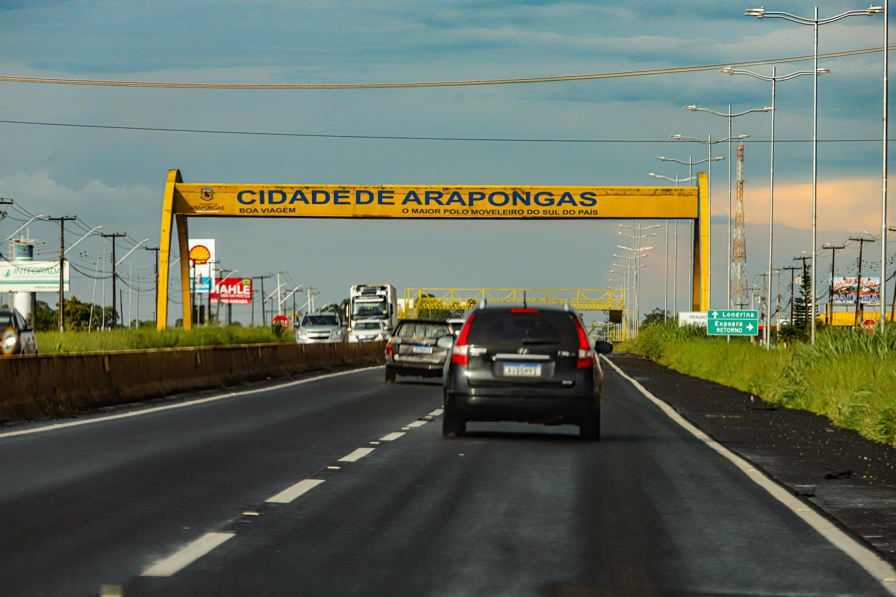

Arapongas é uma cidade localizada no estado do Paraná, na região Sul do Brasil. Conhecida como a "Capital do Polo de Confecção de Roupas", ela possui uma forte tradição na indústria têxtil e de confecção, o que impulsiona sua economia e gera muitas oportunidades de emprego na região.
A cidade foi fundada oficialmente em 1954 e, ao longo dos anos, cresceu rapidamente devido ao desenvolvimento do setor industrial.
Arapongas também é conhecida por sua qualidade de vida, com uma infraestrutura urbana bem estruturada, escolas, parques e uma vida cultural ativa.
Além da indústria, Arapongas possui uma natureza bastante exuberante, com áreas verdes e pontos turísticos que atraem visitantes, como o Parque Ambiental e o Jardim Botânico de Arapongas. A cidade mantém um clima típico de região subtropical, com verões quentes e invernos amenos.
Com uma população diversificada e uma economia dinâmica, Arapongas continua a se desenvolver, mantendo suas raízes industriais ao mesmo tempo em que busca aprimorar a qualidade de vida de seus habitantes.

Demandas
Sementes de Soja e Milho: A produção de grãos é a espinha dorsal da agricultura na região, tornando a demanda por sementes de soja e milho uma prioridade constante.
Fertilizantes e Corretivos de Solo: Essenciais para a manutenção da produtividade em lavouras intensivas de grãos.
Defensivos Agrícolas: A proteção das lavouras de soja e milho contra pragas e doenças é fundamental para os produtores locais.
Máquinas e Equipamentos Agropecuários (Médio Porte): Há demanda por tratores, plantadeiras e pulverizadores. Também há procura por peças de reposição e serviços de manutenção.
Materiais para Armazenagem de Grãos (Pequeno e Médio Porte).